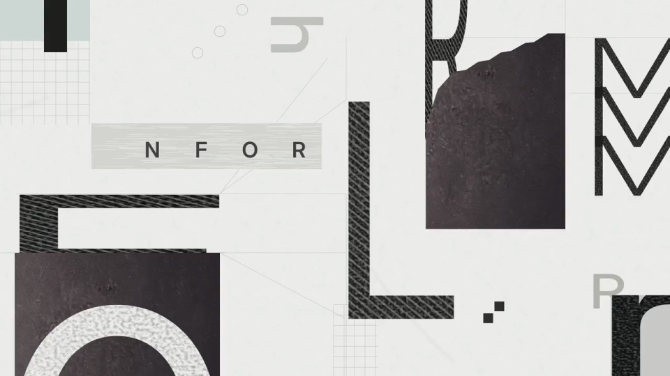
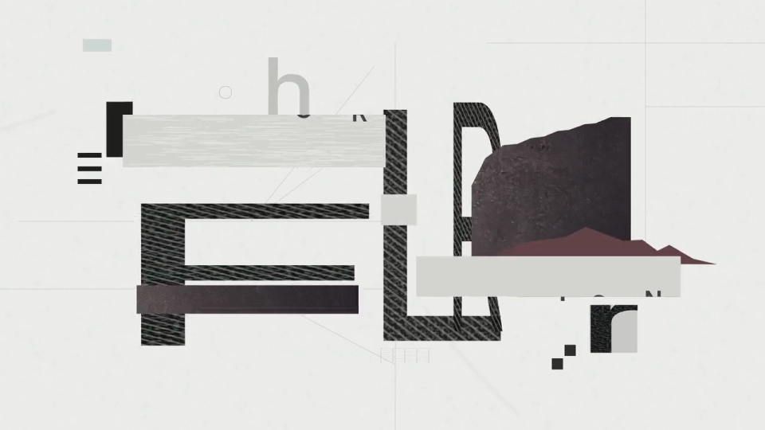
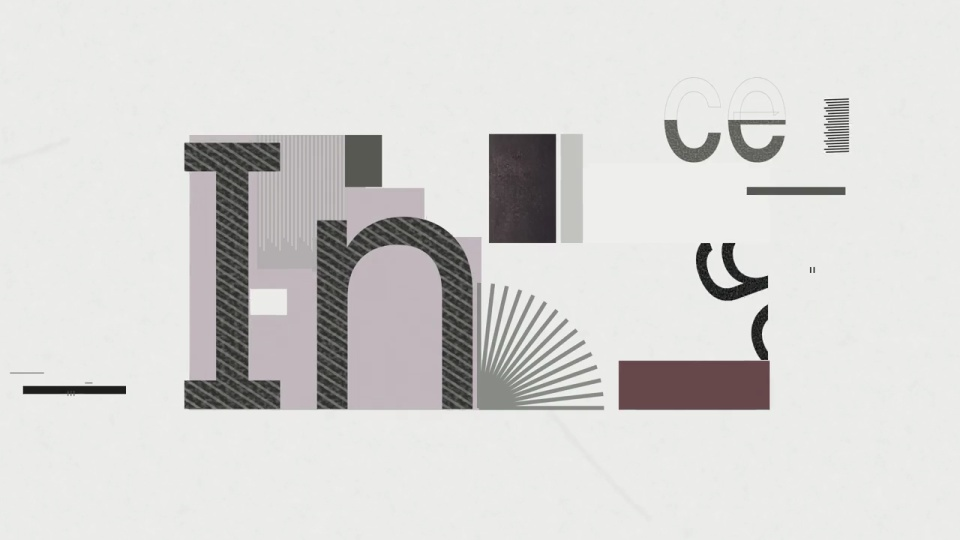
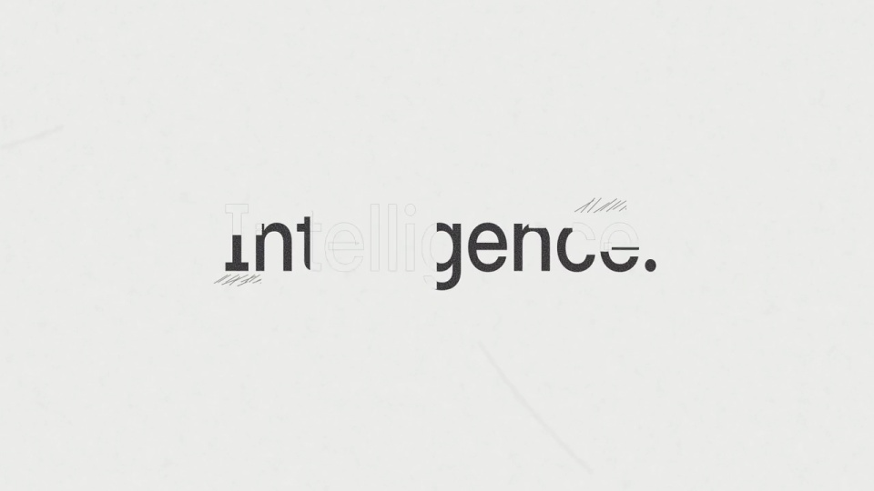
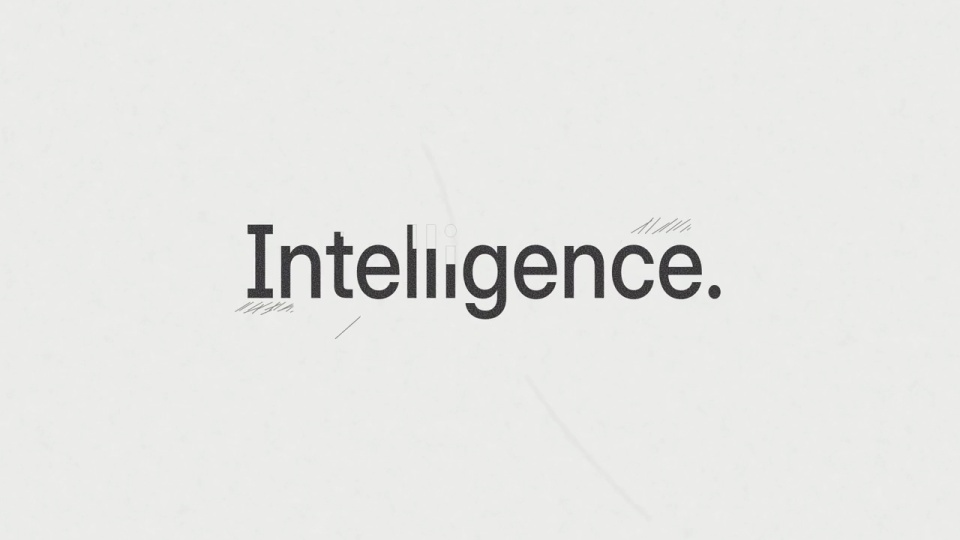

Harvey / V337
信息拼贴变为墨字
前半段用不同大小的字母、条带和几何铺满画面，整体缩小后，碎片向中央单词的基线靠拢。元素退出与新字母出现错开进行。
构图与编排 可播放 · 可替换内容
整体编排规则示例
查看 HTML 源码
<!doctype html><html lang="zh-CN"><meta charset="utf-8"><meta name="viewport" content="width=device-width,initial-scale=1"><title>信息拼贴变为墨字 · sequence</title><style>html,body{margin:0;width:100%;height:100%;overflow:hidden;background:#eeeee9}canvas{display:block;width:100%;height:100%;object-fit:contain}</style><body data-mode="sequence"><canvas width="1000" height="600"></canvas><script src="data.js"></script><script src="common.js"></script><script src="scene.js"></script><script src="bridge.js"></script></body></html>画面元素大字母碎片几何纸片Information 条带Intelligence 单词
MOTION LANGUAGE
动作与构图
局部动作 · 构图规则
01
杂乱字母先收成一个词的轮廓
杂乱字母先收成一个词的轮廓规则示例
查看 HTML 源码
<!doctype html><html lang="zh-CN"><meta charset="utf-8"><meta name="viewport" content="width=device-width,initial-scale=1"><title>信息拼贴变为墨字 · sequence</title><style>html,body{margin:0;width:100%;height:100%;overflow:hidden;background:#eeeee9}canvas{display:block;width:100%;height:100%;object-fit:contain}</style><body data-mode="clip" data-start="1.2" data-end="2.8"><canvas width="1000" height="600"></canvas><script src="data.js"></script><script src="common.js"></script><script src="scene.js"></script><script src="bridge.js"></script></body></html>前半段用不同大小的字母、条带和几何铺满画面，整体缩小后，碎片向中央单词的基线靠拢。元素退出与新字母出现错开进行。
02
结尾必须能一眼读完
黑色单词居中，字号明显小于开头碎片；纸片和线条退到极低对比，只留下阅读所需的笔画。更换关键词时重新分配字母宽度，不保持原碎片机械平移。
SEQUENCE
段落与节奏
点击段落，定位到上方编排示意。





画面参考 · 离散静帧
KEEP THE RELATIONSHIPS
制作其他主题
- 适合表达由杂乱信息到清晰结论，替换单词后重算字距与汇聚点。
制作约束
大字母碎片 / 几何纸片 / Information 条带 / Intelligence 单词
- 前半段用不同大小的字母、条带和几何铺满画面，整体缩小后，碎片向中央单词的基线靠拢。元素退出与新字母出现错开进行。
- 黑色单词居中，字号明显小于开头碎片；纸片和线条退到极低对比，只留下阅读所需的笔画。更换关键词时重新分配字母宽度，不保持原碎片机械平移。